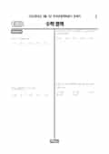

문제지


시험지를 먼저 풀어 보세요. 등급컷·표준점수·난이도는 흐리게 가려 뒀어요.
| 등급 | 원점수 | 표준점수 | 백분위 | 누적 |
|---|---|---|---|---|
| 1 | 80 | 140 | 96 | 4.04% |
| 2 | 68 | 130 | 89 | 11.13% |
| 3 | 54 | 117 | 77 | 24.76% |
| 4 | 36 | 101 | 60 | 40.11% |
| 5 | 24 | 90 | 41 | 60.9% |
| 6 | 16 | 83 | 26 | 77.14% |
| 7 | 13 | 80 | 14 | 90.86% |
| 8 | 9 | 76 | 4 | 96.78% |
등급별 컷 · 만점 100점
| 등급 | 표준점수 이상 | 인원(명) | 비율 |
|---|---|---|---|
| 1 | 140 | 14,131 | 4.2% |
| 2 | 130 | 25,679 | 7.63% |
| 3 | 117 | 38,721 | 11.51% |
| 4 | 101 | 60,799 | 18.08% |
| 5 | 90 | 62,966 | 18.72% |
| 6 | 83 | 57,084 | 16.97% |
| 7 | 80 | 46,377 | 13.79% |
| 8 | 76 | 19,593 | 5.83% |
| 9 | 68 | 11,007 | 3.27% |
시·도교육청 공개 자료
출처: 시·도교육청이 공개한 전국연합학력평가 성적 분석·통계자료(공개 자료 보기).
발행 기관: 시·도교육청(전국연합학력평가). 파일 위치: 이 사이트가 보관한 사본. 저작권은 발행 기관에 있습니다. 원본과 다르거나 게시 중단이 필요하면 연락처로 알려 주세요. 등급컷 출처 구분은 데이터 원칙에서 설명합니다.
막대 색은 역대 대비 난이도 · 진한 막대가 이 시험 · 막대를 누르면 그 회차로 이동
| 회차 | 1등급컷 | 표점 최고 | 1등급 표점 | 난이도 |
|---|---|---|---|---|
| 9월 학평2025년 고2이 시험 | 80 | 158 | 140 | 매우 어려움 |
| 6월 학평2025년 고2 | 76 | 161 | 138 | 매우 어려움 |
| 3월 학평2025년 고2 | 80 | 157 | 138 | 쉬움 |
| 10월 학평2024년 고2 | 82 | 156 | 141 | 매우 어려움 |
| 9월 학평2024년 고2 | 80 | 160 | 141 | 매우 어려움 |
| 6월 학평2024년 고2 | 85 | 150 | 138 | 보통 |
| 3월 학평2024년 고2 | 80 | 155 | 137 | 보통 |
| 9월 학평2023년 고2 | 80 | 158 | 140 | 어려움 |
| 6월 학평2023년 고2 | 88 | 145 | 136 | 매우 쉬움 |
| 3월 학평2023년 고2 | 81 | 156 | 139 | 보통 |